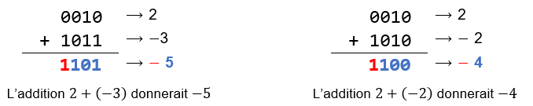
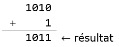
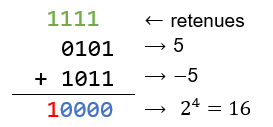

Nous avons déjà vu comment coder en binaire des entiers positifs (entiers naturels) dans le chapitre 1. Dans ce chapitre nous allons voir comment sont représentés en machine les entiers relatifs (entiers négatifs et positifs).
Une idée simple pour représenter les entiers relatifs est :
En procédant ainsi, si on code les entiers naturels sur 4 bits (pour simplifier), alors :
1er problème (mineur) : l’entier $0$ serait codé de deux façons : 0000 et 1000 ($+0$ et $-0$ , un entier positif et un entier négatif)
2ème problème (majeur !) : l’algorithme d’addition habituel ne fonctionne plus (lorsque l’on additionne deux entiers de signes contraires) comme le montre ces deux exemples :

Ce n’est donc pas une méthode satisfaisante car il faudrait alors redéfinir l’algorithme de l’addition. La solution la plus commune pour contourner ces problèmes est d’utiliser l’encodage dit par complément à 2.
On explique à la fin pourquoi cette méthode s'appelle le complément à 2.
Considérons que l’on code nos entiers sur $n=4$ bits (on peut généraliser tout ce qui sera vu). On ne s’intéresse ici qu’à la représentation des entiers négatifs.
Exemple : représentation du nombre $-5$ par la méthode du complément à 2

Conclusion : La représentation de $-5$ en complément à deux sur 4 bits est donc 1011.
Les nombres binaires sont écrits dans l’ordre en tournant dans le sens des aiguilles d’une montre, tout en conservant la signification du bit de signe. Comme on n’a pas de « $−0$ » il y a un décalage de 1 dans la symétrie entre entiers positifs et négatifs alors qu’elle est parfaite pour les binaires.
Reprenons l’exemple du codage de $-5$. On est parti de 5 (étape 1), on l’a écrit en binaire (étape 2) pour obtenir 0101 puis on a inversé tous les bits (étape 3, ce qui revient à appliquer l’opérateur NON à chaque bit) pour trouver 1010 qui représente $-6$ et enfin on a ajouté 1 (étape 4) pour obtenir 1011 qui représente $-5$.
Connaissant une représentation en complément à 2, il est bien sûr possible de déterminer de quel entier il s’agit.
Exemple : Quel entier est représenté par 1011 en complément à 2 (sur 4 bits) ?
Conclusion : Donc 1011 est la représentation en complément à 2 de l’entier $-5$ (sur 4 bits).
Si on code sur 4 bits, il est possible de représenter $2^4$ entiers. Dans la méthode du complément à 2 :
On peut donc représenter ainsi les entiers positifs compris entre $0$ et $7$ et les entiers strictement négatifs compris entre $-8$ et $-1$ ; c’est-à-dire tous les entiers relatifs compris entre $-8$ et $7$ (il y en a bien 16 !).
De manière générale, si on dispose de $n$ bits pour représenter des entiers en complément à 2, on peut en représenter $2^n$. La moitié d’entre eux sont des entiers positifs (il y en a $2^{n-1}$) et l’autre moitié des entiers strictement négatifs (il y en a aussi $2^{n-1}$).
Ainsi, on peut représenter tous les entiers positifs compris entre $0$ et $2^{n-1}-1$ et tous les entiers strictement négatifs compris entre $-2^{n-1}$ et $-1$, c’est-à-dire tous les entiers relatifs compris entre $-2^{n-1}$ et $2^{n-1}-1$.
Lorsque l’on cherche à déterminer le codage de $-5$, on cherche en fait le nombre $n$ tel que $n+5=0$.

En binaire, le calcul de $5+(-5)$ est 0101 + 1011 qui donne 10000 c’est-à-dire $2^4$. Cela signifie que 1011 est le complément à $2^4$ de 0101, c’est-à-dire le nombre binaire qu’il faut ajouter à 0101 pour obtenir $2^4$. On devrait donc dire de manière plus rigoureuse le complément à $2^4$ (puisque l’on a choisi de coder sur 4 bits).
Il n'y a pas un problème ? Je croyais que $5 + (-5)$ devait faire $0$ et non $2^4$...
En fait, en binaire le résultat donne 10000 mais comme on a choisi de coder sur 4 bits, le bit 1 n’est pas pris en compte (puisque c’est le 5ème bit) et le résultat en machine est donc bien égal à 0000, c’est-à-dire 0.
Pourquoi la méthode proposée permet de déterminer la représentation en complément à 2 d'un entier ?
Même si la représentation circulaire permettait de comprendre l'idée, voici une explication plus rigoureuse.
Notons $x$ un entier positif et $x_2$ son écriture binaire. Si on cherche la représentation en complément à 2 de l’opposé de $x$, on cherche en fait le nombre $m$ tel que $x+m=0$.
Notons $\overline{x_2}$ le nombre binaire dans lequel on inverse tous les bits de $x_2$ (on dit que $\overline{x_2}$ est le complément à 1 de $x_2$).
On remarque alors qu’on a toujours $x_2+\overline{x_2} =$ 1111 puisque pour chaque bit on additionne un bit « 1 » avec un bit « 0 » (par exemple, 1011 + 0100 = 1111).
Si on ajoute $1$ à ce nombre, on obtient $0$. En effet :

Comme on a choisi de coder sur 4 bits, on ignore la dernière retenue et le résultat est donc 0000 soit $0$.
On vient de montrer que $x_2+\overline{x_2}+1 =0$ et donc a trouvé la représentation binaire de notre nombre $m$ (l’opposé de $x$) :
$$\overline{x_2}+1.$$
Ainsi, pour représenter un entier négatif ($m$), on part de sa valeur absolue ($x$), que l’on code en binaire ($x_2$), puis on inverse tous les bits ($\overline{x_2}$) et enfin on ajoute $1$.
Références :
Germain BECKER & Sébastien POINT, Lycée Mounier, ANGERS